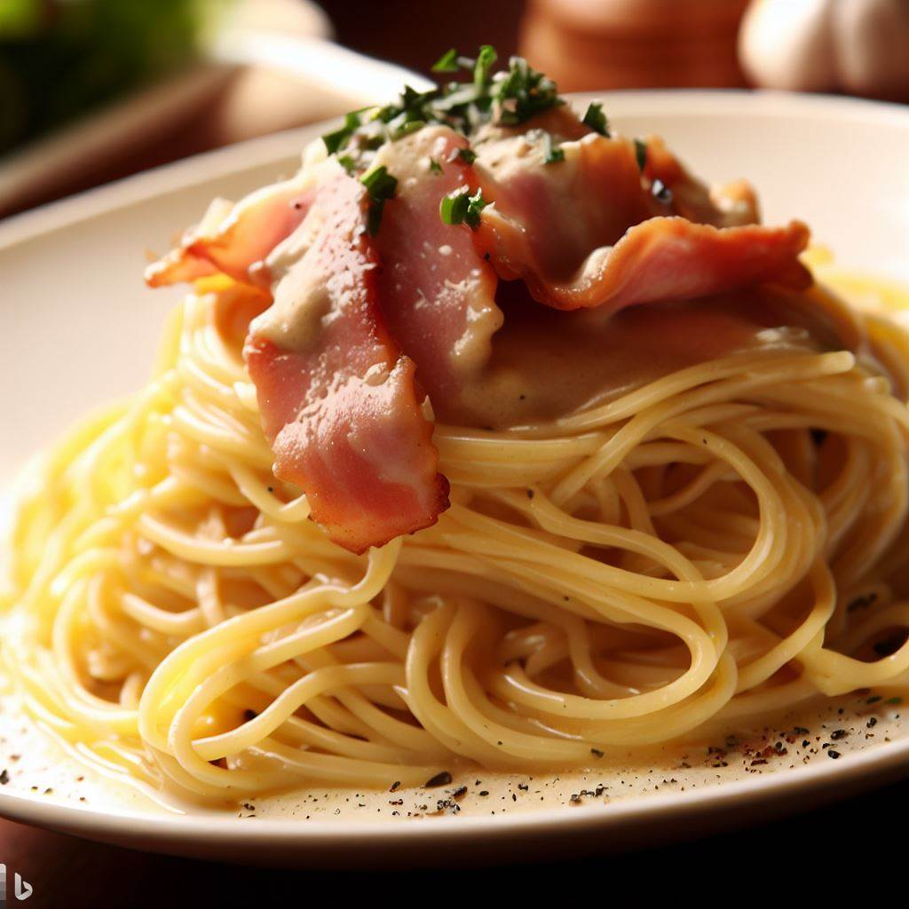

Easy eats
Spaghetti Carbonara

| Ingredients |
Amount |
| Spaghetti |
12 oz |
| Bacon or Pancetta |
6 oz, diced |
| Egg yolks |
3 |
| Heavy cream |
1/2 cup |
| Parmesan cheese |
1/2 cup, grated |
| Salt |
To taste |
| Black pepper |
To taste |
Directions:
- Cook the spaghetti according to package instructions. Reserve 1 cup of the pasta cooking water.
- In a skillet, cook the bacon or pancetta over medium heat until crispy. Remove from the skillet and place on a paper towel to drain.
- In a mixing bowl, whisk together the egg yolks, heavy cream, and grated Parmesan cheese.
- Drain the spaghetti and add it to the skillet with the bacon or pancetta. Toss to combine.
- Remove the skillet from heat and let it cool for 1-2 minutes. Then, add the egg mixture to the skillet and stir quickly to combine.
- If the sauce is too thick, add some of the reserved pasta cooking water to thin it out. Season with salt and black pepper, to taste.
- Serve and enjoy!